Revue de presse
Articles et émissions consacrés aux spectacles et aux disques auxquels j'ai participé, comme comédien-musicien avec Décor Sonore et comme contrebassiste.
Musique : Oni Giri
- 2023Jazz Magazine
Critique du disque Le Jardin des rêves, quatre étoiles, par Jean-François Mondot : « la contrebasse de Damien Boutonnet n'y est pas pour rien ».
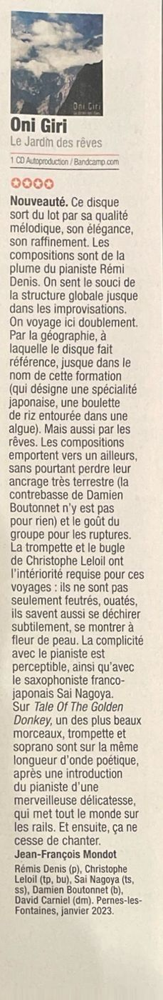
Voir en grand - automne 2023Ventilo, Marseille
« Une touche de jazz », portrait de Rémi Denis et du quintet par Laurent Dussutour, qui salue une contrebasse « confondant de naturel ».
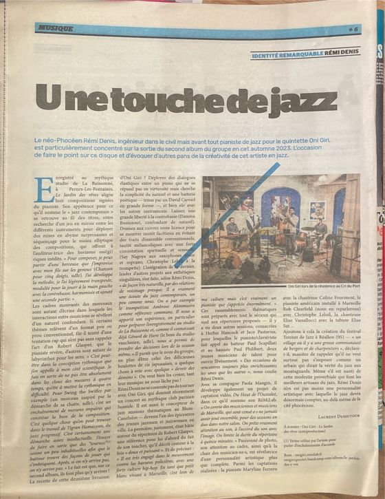
Voir en grand
Presse écrite : Décor Sonore
- juillet 2023Télérama Sortir
Instrument | Monument.
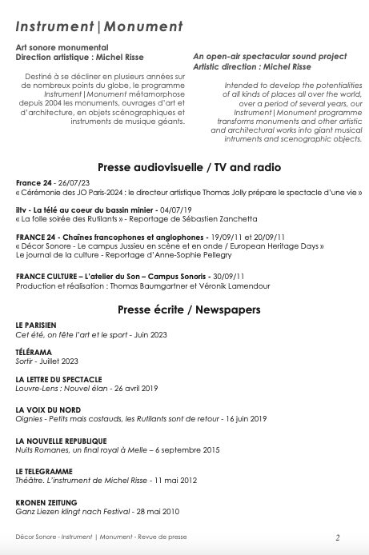
Revue de presse d'Instrument | Monument éditée par Décor Sonore (Télérama, Le Parisien, La Lettre du spectacle, La Nouvelle République, Le Télégramme, Kronen Zeitung, France Culture, France 24). Voir en grand - juin 2023Le Parisien
Instrument | Monument dans la sélection des sorties de l'été.
- avril 2019La Lettre du spectacle
Instrument | Monument au Louvre-Lens.
- septembre 2015La Nouvelle République
Instrument | Monument aux Nuits romanes de Melle.
- juillet 2015Un fauteuil pour l'orchestre
Coup de cœur pour Urbaphonix au festival Teatro a Corte, en Italie, par Camille Hazard.
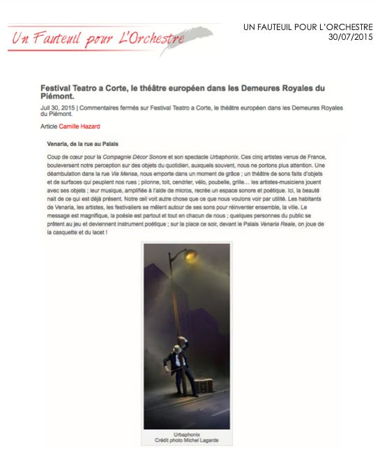
Voir en grand - juin 2014TGV Magazine
Urbaphonix à Nanterre.
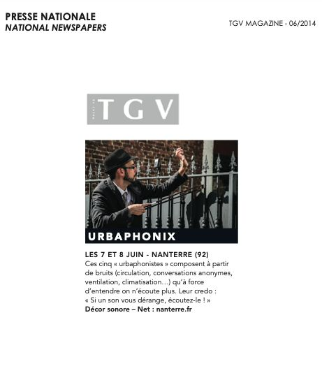
Voir en grand - janvier 2014Ouest-France
« La ville, comme instrument de musique » : Urbaphonix à Angers.
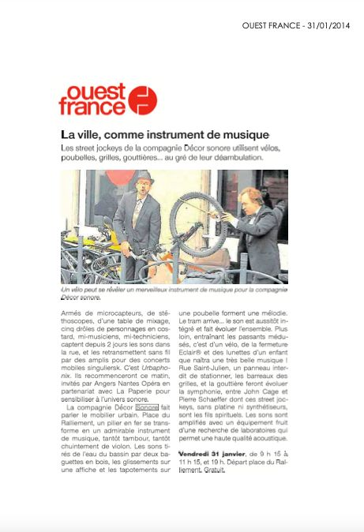
Voir en grand - 2013La Voix du Cantal
Urbaphonix dans les villages du Cantal, en avant-programme du festival d'Aurillac.
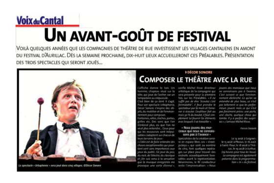
Voir en grand - janvier 2013Stradda
Dossier sur la création sonore en espace public. Photo de Damien Boutonnet faisant résonner le buste de Jean-Baptiste Godin à Guise.
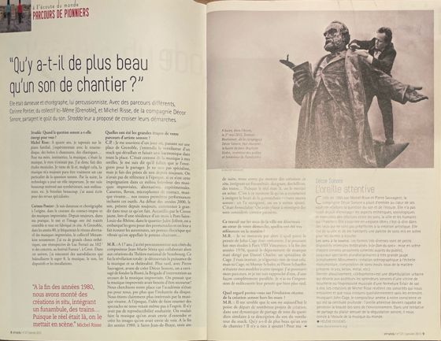
Voir en grand - 2012Libération, supplément
Urbaphonix en ouverture du supplément régional, avant le festival Chalon dans la rue.
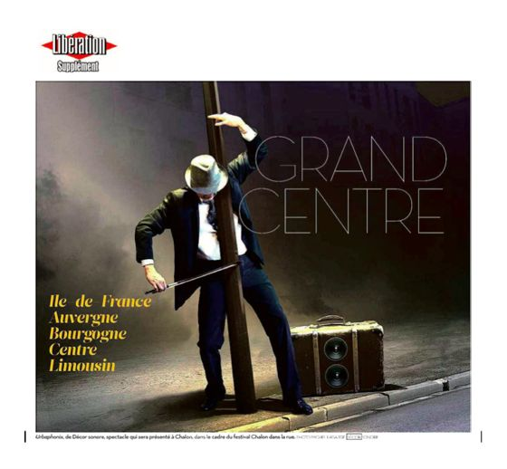
Voir en grand - juillet 2012L'Estrade
Urbaphonix en couverture pour Chalon dans la rue.
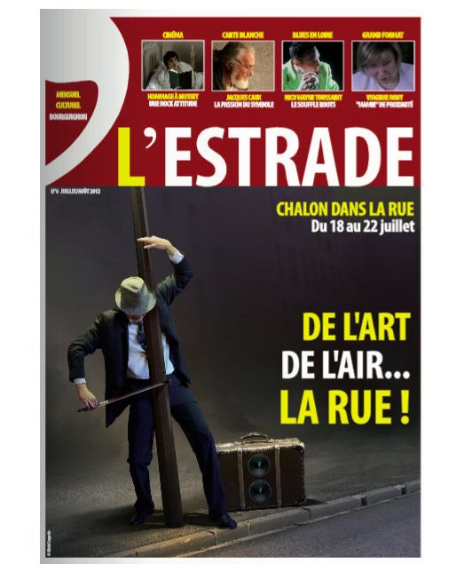
Voir en grand - mai 2012Le Télégramme
L'instrument de Michel Risse.
- 2007Mouvement
Instrument | Monument, création in situ.
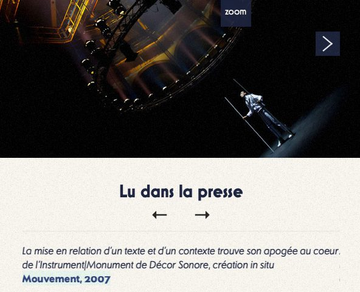
Voir en grand - 2004Cassandre
Instrument | Monument par Serge Chaumier.
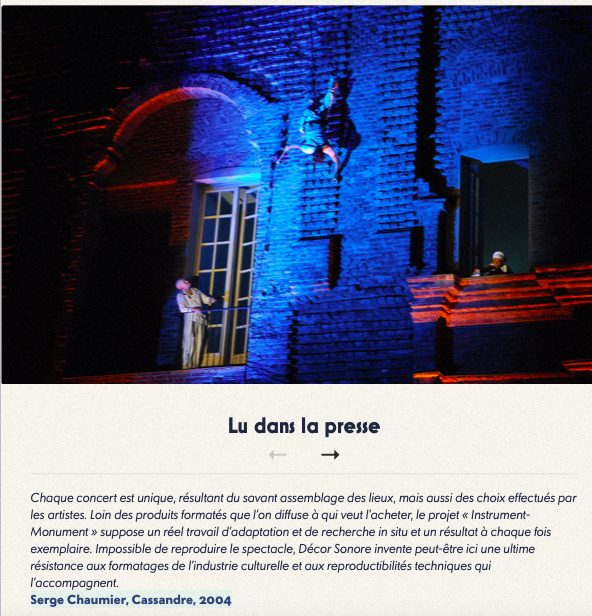
Voir en grand
Radio et télévision
- septembre 2015France Culture
Supersonic : les décors sonores de Michel Risse.
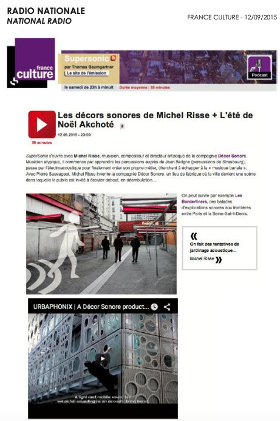
Voir en grand - août 2013France 2, journal de 13 h
Reportage sur Urbaphonix au festival d'Aurillac.
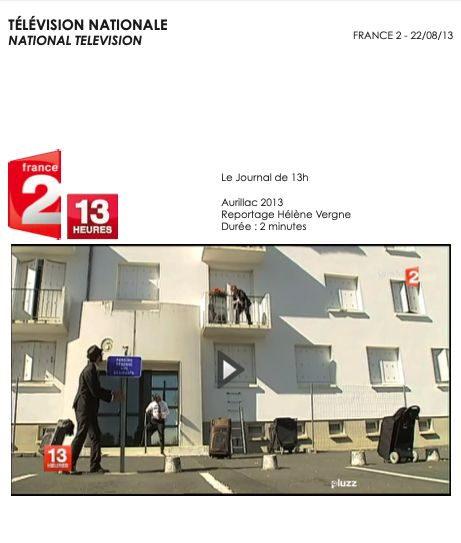
Voir en grand - juin 2013France Inter
Ouvert la nuit : Décor Sonore.
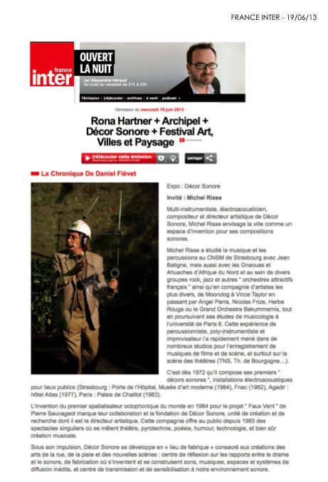
Voir en grand - juin 2012France 2
Des mots de minuit : Michel Risse invité pour Chalon dans la rue.
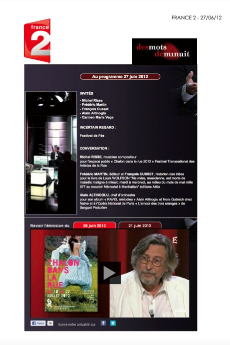
Voir en grand - septembre 2011France Culture
L'Atelier du son : Campus Sonoris.
- septembre 2011France 24
Décor Sonore au campus de Jussieu pour les Journées européennes du patrimoine.
À l'étranger
- octobre 2016El Sol de Cuautla, Mexique
Urbaphonix au Festival international cervantino.
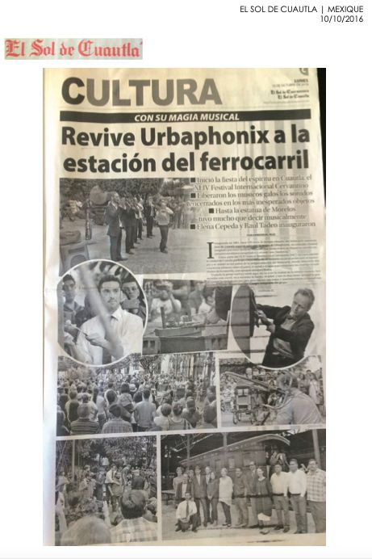
Voir en grand - mai 2016Wuhan Morning Post, Chine
Urbaphonix à Wuhan.
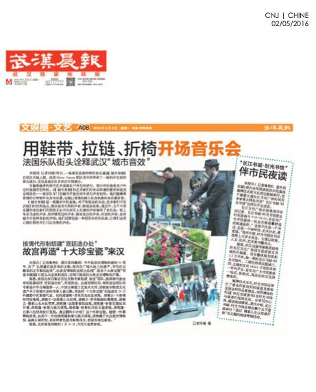
Voir en grand - mai 2010Kronen Zeitung, Autriche
Instrument | Monument à Liezen.